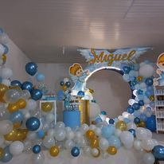

Icoporlandia Leticia Amazonas 🥳
"Decoramos y damos vida a tu fiesta, sal de la rutina 🌈 con Icoporlandia"
Ver más diseñosNuestros servicios:



"Decoramos y damos vida a tu fiesta, sal de la rutina 🌈 con Icoporlandia"
Ver más diseños